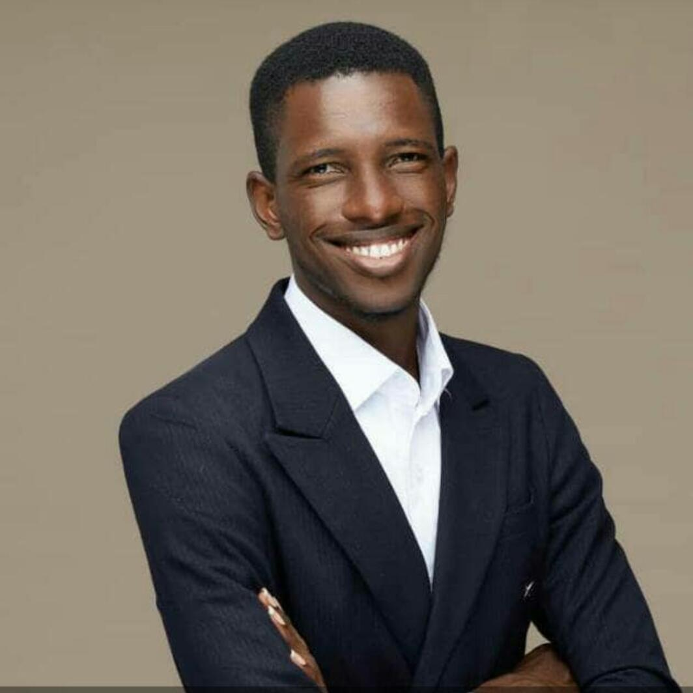

Awosola Olakunle

Summary
I'm a web developer, have experience with Management, CSS, Adobe Photoshop. I do what is needed to succeed.
A hard worker and always willing to learn more and grow my skills. My main focus is front end development which I enjoy doing by learning from some awesome developers in the industry as well. I am a solution driven with more than five years Digital Information Technology and Personal/Business PR solution experience.
Education
- Nigerian Defence Academy, Kaduna - Masters in Business Administration(MBA) 2019-2021
- Tai Solarin University of Education - Bachelor of Science (B.Sc) Computer Science 2009-2013
- United Secondary School, Ikorodu, Lagos. - SSCE
Work Experience
- Creative Director - SEP IMAGERY (2016 - Till date)
- Head of photographer
- Chief Editor
- Strategy and Brand Personel
- Front-End developer - SEI Technologies (2020 - Till date)
- Develop new user-facing features.
- Build reusable code and libraries for future use.
- Ensure the technical feasibility of UI/UX designs.
- Optimize application for maximum speed and scalability.
- Assure that all user input is validated before submitting to back-end.
- Creative and Web designer - Vivid Vision Global Resources (2014 - 2016)
- Website application and development, the use of Search Engine Marketing, and other digital /social monitoring tools
- Social Media Engagement, Management and Monitoring
- Creative designer of all the company identity and designs (brochures, complimentary cards, proposals, Public Advert designs, Web designs e.t.c)
- Official photographer of the company for all cooperate and local events.
Skills
- Programming with Javascript
- Programming with Python
- Studio Portrait and Wedding Photographer
- Good use of Photoshop
Awards, Certifications or other Achievements
- Programming with Javascipt, Cousera
- Programming with Python, Coursera
- Most Outstanding Student (NACOSS 2013)